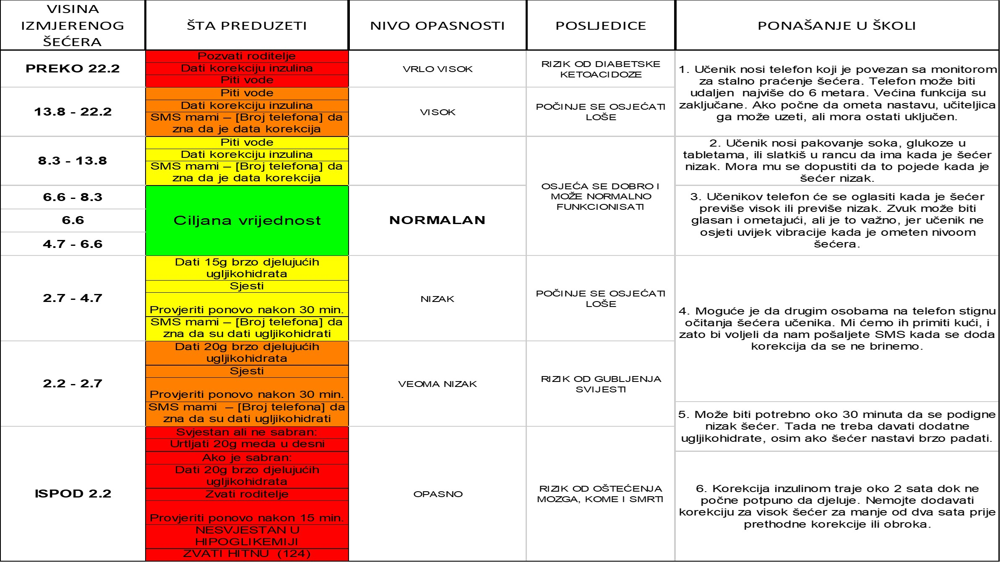

Pozdrav svim slatkišima i njihovim roditeljima
Znam kako vam je na početku...mi smo bili sluđeni informacijom da naša dugo očekivana beba od 11 i po mjeseci ima dijabetes. Iako smo u bolnici prisustvovali obuci o kontroli šećera u krvi, moram priznati da mi je sve prošlo u magli. Trebalo mi je vremena da ponovo složim stvari u glavi i ponovo naučim definicije ukupne dnevne doze inzulina, inzulinske osjetljivosti, korekcije...i ponovo naučim kako se sve to računa.
Znajući kako je svim roditeljima novootkrivenih dijabetičara, pokušao sam složiti sve na jedno mjesto. Nadam se da će vam ovo biti od pomoći.
Imajući u vidu da osobe sa dijabetesom imaju jedinstvenu reakciju i osjetljivost na inzulin, molim vas da sve ovo uzmete samo kao osnovni vodič za računanje. Za bolju i efikasniju kontrolu šećera u krvi se konsultujte sa vašim ljekarom.
Ukupne dnevne količine
Ukupna dnevna doza inzulina (UDDI) je količina inzulina koja se koristi tijekom cijelog dana, odnosno zbir bolusa i bazalne doze tokom 24 sata. Postoji jednostavan način određivanja Ukupne dnevne količine. Ovaj je parametar potreban za izračunavanje drugih parametara, poput omjera ugljikohidrata i inzulinske osjetljivosti.
Omjer ugljikohidrata
Omjer ugljikohidrata (I/UH) navodi koliko grama ugljikohidrata pokriva jedna jedinica inzulina. Kod svake osobe je drugačije, a broj uveliko zavisi od količine inzulina koju je pacijent dobio u prethodna 24 sata. Da biste izračunali omjer ugljikohidrata, podijelite 500 sa UDDI = broj grama ugljikohidrata/jedinici inzulina.
Npr. 500 / 20 = 25. Jedna jedinica inzulina pokriva 25 gr ugljikohidrata u obroku.
Obično se računanje kod odraslih uzima omjer od 12 g UH po 1 jedinici inzulina.
Faktor inzulinske osjetljivosti
Inzulinska osjetljivost (IO) je pad količine glukoze u krvi
(mmol/l) koji uzrokuje jedna primljena jedinica
inzulina. Da bi se odredila inzulinska osjetljivost,
primjenjuje se pravilo 80 na sljedeći način:
Inzulinska osjetljivost = 100 / UDDI (mmol/l) = broj (mmol/l) /jedinici inzulina.
Npr. 100 / 20 = 5. Jedna jedinica inzulina će spustiti 5 mmol/l šećera u krvi.
Korekcija
Korekciju dodajemo kada je izmjereni nivo šećera prije obroka viši od željenog. Korekciju izračunavamo tako da
od izmjerene količine šećera oduzmemo željenu količinu i onda to podijelimo sa inzulinskom osjetljivošću.
(izmjereni ŠUK - željeni ŠUK) / IO. Tu količinu dodajemo bolusu za obrok.
Npr. (10 - 6) / 4 = 1. Dodajemo korekciju od jedne jedinice inzulina.
Bolus za obrok koji slijedi
U zavisnosti od toga koliki je izmjereni ŠUK prije obroka, daćemo onoliko inzulina da pokrijemo UH u obroku, i dodati korekciju ako je potrebno. Računamo tako da jedna jedinica pokriva 12 g UH.
Izračunavanje bolusa
Sada samo upotrijebite formulu za izračunavanje tako što ukupnu količinu UH u obroku podijelite sa 12 da dobijete količinu inzulina za obrok, i dodate korekciju ako je potrebno.
(UH u obroku/12) + ((Izmjereni ŠUK - željeni ŠUK) / IO) = Ukupna količina inzulina.
Računanje masti i proteina
Masti i proteini se moraju uzeti u obzir prilikom računanja količine inzulina.
Da bi smo odredili koliko inzulina nam je potrebno koristimo sljedeću računicu.
Jedan gram proteina stvara 4 kcal, a jedan gram masti 9 kcal.
Kada izračunamo koliko masti i proteina ima u obroku onda računamo koliko će nam inzulina biti potrebno.
Jedna FPU (jedinica masti i proteina) ili 100 kcal = 10 g ugljikohidrata.
Recimo da u obroku imamo 18 g masti, i 28 gr proteina.
18 x 9 = 162 kcal;
28 x 4 = 112 kcal;
162 + 112= 274 kcal;
274 / 10 = 2.74 FPU ili možemo zaokružiti na 27 g ugljikohidrata
Kada dajemo inzulin na pumpu, normalni bolus koji pokriva samo ugljikohidrate
u obroku možemo dati na početku obroka, a inzulin za masti i proteine dajemona produženi
bolus (square ili dual) po pravilu:
1 FPU = 3 sata;
2 FPU = 4 sata;
3 FPU = 5 sata;
4 FPU = 8 sata;
Sada samo upotrijebite formulu za izračunavanje tako što ukupnu količinu UH u obroku podijelite sa 12 da dobijete
količinu inzulina za obrok,
i dodate korekciju ako je potrebno. Napomena. Ako u jelu ima više masnoće (20 - 40 g), potrebno je
dodati nekih 30% više inzulina od normalne doze.
(UH u obroku/12) + ((Izmjereni ŠUK - željeni ŠUK) / IO) = Ukupna količina inzulina.
Tablice nutritivnih vrijednosti:
Informacije o simptomima
Ovu tabelu možete odštampati i dati učiteljima/nastavnicima u školi da znaju kako prepoznati simptome i kako djelovati u slučaju potrebe.
